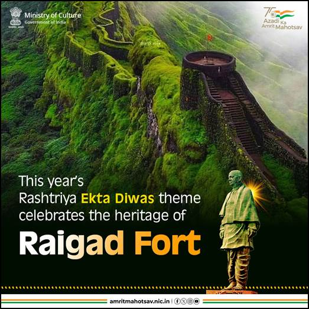
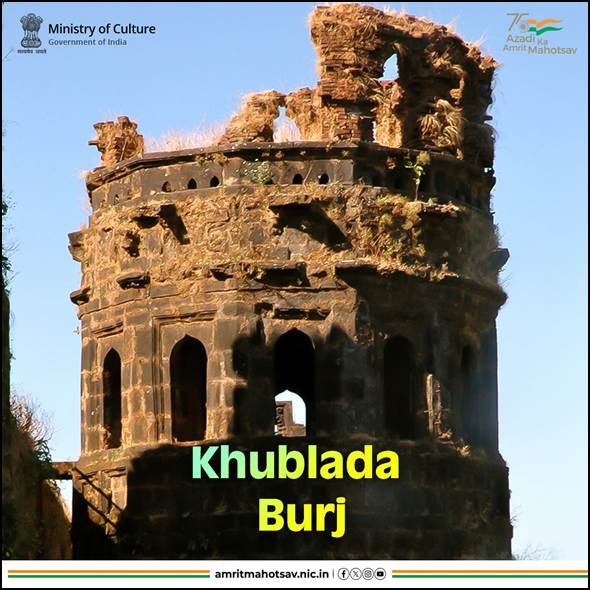
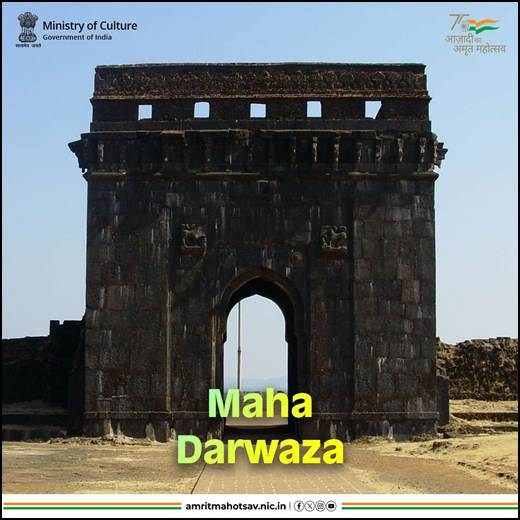

Raigad, surrounded by valleys shaped by the Kal and Gandhari rivers, stands as an isolated massif without connections to neighbouring hills. Its impregnable nature, attributed to physiographic features like steep cliffs and 1500-foot escarpments, is underscored by innovative military defence tactics. Grant Duff, a British historian of the Maratha period has drawn parallels between Raigad and the Rock of Gibraltar. He has gone to the extent of labelling Raigad as the Gibraltar of the east. The fort of Raigad is part of the 12 forts nominated for UNESCO World Heritage under the title “Maratha Military Landscapes of India”. Among the 12 nominated forts, Raigad is the classic example of Maratha architecture and best representation of the capital fort on a hill, well integrated with the physiography of the hill with the most developed typologies of structures within the fort.

The royal complex: The Royal Complex which includes Ranivasa, Rajsadar, Naqqarkhana, Mena Darwaza, and Palkhi Darwaja, is well-fortified and accessible only through three entrances: Naqqarkhana, Mena Darwaja, and Palkhi Darwaja. This fortified complex is commonly known as Balle Qilla (citadel). Adjacent to Balle Qilla are three elegant towers. One is located to the north, while the other two are situated to the east of the fortification wall. The three-storied towers (Manore) are highly ornate in design and appear to have originally served as pleasure pavilions. A toilet connected with proper drainage is noteworthy. An underground cellar (Khalbat Khana) is situated on the east, which was possibly used for secret meetings, personal worship, and also as a treasury.
Rajsadar (Hall of Public Audience): This is where Shivaji Maharaj used to hold his court (darbar) to dispense justice on routine matters and to receive dignitaries and envoys. It is a rectangular structure facing east. It can be approached from the east through a magnificent gateway commonly known as Naqqarkhana. The gateway is a lofty three-storeyed structure facing the royal throne. While the topmost storey is built of bricks, the lower ones are constructed of stone blocks. It is believed that a royal band used to play at Naqqarkhana. It is an excellent example of architecture with astounding acoustic properties. The distance between Naqqarkhana and the royal throne is about 65 meters, yet even the slightest whisper can be heard clearly from both ends. Rajsadar is a mute witness to the joys, sorrows, anger, victories, administrative acumen, and overwhelming generosity of Shivaji Maharaj. The main platform accommodates an octagonal meghdambari (ornate canopy) with a seated image of Chhatrapati Shivaji Maharaj raised over the original site of the throne. It has been recorded that the royal throne, studded with diamonds and gold, rested on eight columns of gold weighing almost 1000 kg. It also bore the royal emblem of Shivaji Maharaj. The umbrella over the throne was adorned with strings of precious stones and pearls.

Holicha Mal: It is located outside Naqqarkhana. It is a wide-open ground that was most likely used for the annual Holi festival. On the western periphery of Holicha Mal, there is a small temple dedicated to Shirkai Bhavani, the presiding deity of the fort. It is believed that the presiding deity was originally housed on a high stone plinth located in the southwest of Holicha Mal, which was later shifted to its current location. To the north of Holicha Mal, there is a spacious and well-laid-out parallel row of structural units, commonly known as Bazar Peth. Each unit in this complex features a veranda in front and two back-to-back rooms in the rear. The plinth and walls are constructed from semi-dressed basalt stone blocks and random rubble stones, with lime invariably used as mortar. Jagadishwar Mandir: The temple, facing east, is rectangular on plan with a mandapa in front and sanctum sanctorum on the rear. The temple could be entered through a low-height entrance. The sanctum sanctorum has a Siva linga which is under worship even now. The interior walls of the temple are without any carvings. However, the projected superstructure is supported by elegantly carved brackets. Samadhi of Chhatrapati Shivaji Maharaj: Adjacent to the Temple, the Samadhi of Chhatrapati Shivaji Maharaj is located almost opposite to the eastern entrance of Jagadishwar Mandir. Originally, the Samadhi had a low height octagonal platform only. But, sometimes in the beginning of the twentieth century not only the height of the platform was raised but a canopy too had been constructed at the same site. At the foothills, near the Raigadwadi village, is located Chitta Darwaza. It is also known locally as Jit Darwaja. After trekking by foot for about 70-80 m, there exists Khoob Lada Burj. It is a strategically located tower from where anyone coming close to the fort could easily be spotted by the security personnel.